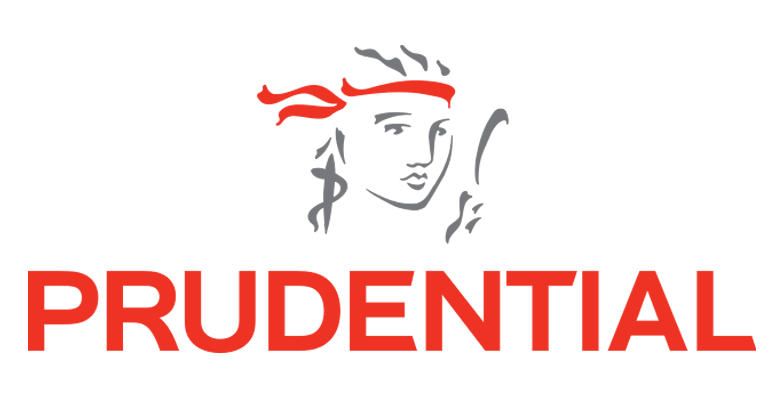
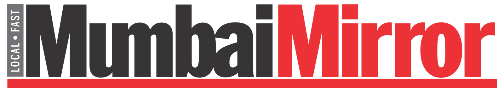
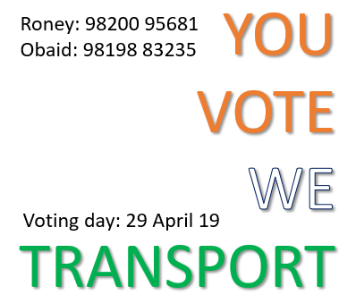
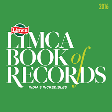
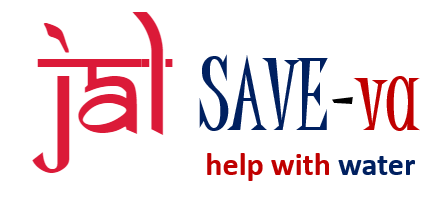
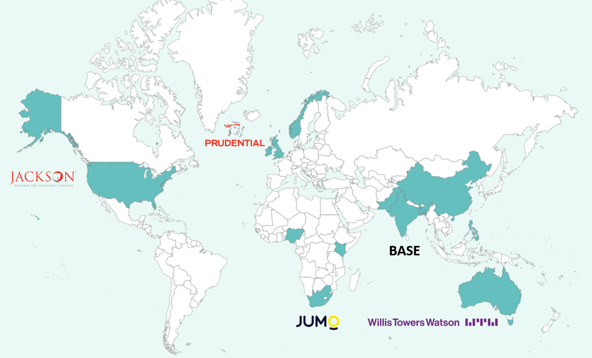

I am Obaid
Insurance | FinTech | Operations | Customer Experience | People Champion | ❤ Philanthropy
Over 19 years of leadership experience in the insurance | financial domain, with emphasis on transitioning and designing new processes.
Adept in leading large teams with a successful track record of rationalizing OPEX and mitigating risk.
Also known for merging program and people management attributes to cultivate an engaging & high performing culture.
My Work Experience
as Senior Customer Operations Manager
Onboarded to launch the FinTech operations in India. Responsibilities include setting up the Indian hub (licenses, policies, personnel and facility). RFP an outsourced partner to handle the entire customer life cycle (onboarding to collections). Design and own SLAs for customer service hub and outsourced partner. Overseeing the operations of various India projects as they come to fruition. As a customer expereience champion assist the larger project team to customize the product / App for an India launch.
as Operations Manager
WTW on-boarded me to lead the Reinsurance unit, with the primary objective of developing the current level of leadership and embedding new work transfers through which I helped transition work worth c200 FTE. As a member of the WTW senior management team, I was also responsible for creating innovation using Robotics (RPA), managing change and nurturing the operational excellence initiative.

Sept '06 till Jan ’14
As a member of the Prudential senior management team my job revolved around leading a team of 140 team members, six team managers & two Operations Managers with accountability on all service delivery parameters. In Aug ’07 was nominated to migrate the Jackson National Life process to the Mumbai unit. This migration encompassed a total of 6 main verticals (42 work types) & combined strength of 107 FTEs. Key accountabilities included planning, change management, delivery, continuous improvement and relationship management with teams in England & Scotland.
as Operations Manager
As a member of the Prudential senior management team my job revolved around leading a team of 140 team members, six team managers & two Operations Managers with accountability on all service delivery parameters. In Aug ’07 was nominated to migrate the Jackson National Life process to the Mumbai unit. This migration encompassed a total of 6 main verticals (42 work types) & combined strength of 107 FTEs. Key accountabilities included planning, change management, delivery, continuous improvement and relationship management with teams in England & Scotland.

as Team Leader
Joined the team as a pilot Team Leader to launch and expand the India customer operations team in Intellent Global Services. Was responsbile for drafting the currriculum, setting up the progression plan and leading the OJT bacthes for opeartion leaders, quality checkers and new team members.

as Team Leader
One of the only non-engineers to join the pilot team to set-up the technical support for HP products in Stream TracMail. Take pride in the fact, that I was the first one to get pomoted to the post of the team leader even though belonged to a non-technical background.
My Achievements
(1) Winner of the WTW CEO CIRCLE AWARD – was among the top 3 winners across a base of forty thousand employees globally.
(2) Inducted into the HIGH PERFORMERS CLUB at WTW for outstanding performance and being a role model on behavior / values.
(3) Receiver of the PRUACHIEVE – SPECIAL RECOGNITION AWARD for 2012.
(4) Won the OUTSTANDING CONTRIBUTOR title – conferred by the senior UK PRU Leadership.
(5) Recognized as the BEST CONTRIBUTOR by National Rail Enquiries (UK Railways).
(6) Featured in the LIMCA BOOKS OF AWARDS for a feat on the Indian National Anthem.
My Skills
Core Competencies
Change Leadership ⭐⭐⭐⭐⭐
Nurturing Talent ⭐⭐⭐⭐
Process Designing ⭐⭐⭐⭐
Project Management ⭐⭐⭐⭐
Service Delivery ⭐⭐⭐⭐⭐
Cost Optimization ⭐⭐⭐⭐
Soft Attributes
Continuous Learning ⭐⭐⭐
Critical Thinking ⭐⭐⭐⭐
Customer Excellence ⭐⭐⭐⭐⭐
Networking ⭐⭐⭐⭐⭐
P.O.S.H rep. ⭐⭐⭐
People Champion ⭐⭐⭐⭐
Paying It Forward
Roney Rordrigues and I founded OR Projects in 2009 with the aspiration of bringing charity, dignity of labour & patriotism to friends and colleagues. No affiliation with any NGOs: we dream, we plan & we execute ourselves!

2009 till present
You Treat They Feast - an initiative to collect food | general supplies to distribute among-st the ones who really need them. We have done 12 such drives for daily wage laborers, farmers, policemen, pavement dwellers, street kids etc.
You Treat They Feast - an initiative to collect food | general supplies to distribute among-st the ones who really need them. We have done 12 such drives for daily wage laborers, farmers, policemen, pavement dwellers, street kids etc.

2010 | 2014 | 2019
You Vote We Transport - Recognizing the fact that voting is important and a birth right we volunteered to ferry senior | differently abled citizens from their residence to the designated polling booths. In the last three general elections we have supported more than 35 citizens to exercise their voting rights and as this initiative was widely covered by media and radio channels, we hope to have inspired thousands of youth to vote as well.
You Vote We Transport - Recognizing the fact that voting is important and a birth right we volunteered to ferry senior | differently abled citizens from their residence to the designated polling booths. In the last three general elections we have supported more than 35 citizens to exercise their voting rights and as this initiative was widely covered by media and radio channels, we hope to have inspired thousands of youth to vote as well.

Loose the Blame and Support the Game - This Commonwealth Games initiative was to help shift focus from the negativity due to corruption claims and focus on the Indian athletes. This was a world stage event and didn’t want our country’s name tarnished.

2015
Jan Gan Man - We hold a national record, documented by the Limca Books of Awards, for having the maximum recital of the Indian national anthem on a single day with a large crowd across numerous locations in an around Mumbai.
Jan Gan Man - We hold a national record, documented by the Limca Books of Awards, for having the maximum recital of the Indian national anthem on a single day with a large crowd across numerous locations in an around Mumbai.

2016-17
Jal Save-va - When we were made aware of the plight of villagers and farmers due to severe drought in the village of Vashala, we crowd funded enough money to help them dig two borewells. This has made the entire village of 350+ families self-reliant for years to come.
Jal Save-va - When we were made aware of the plight of villagers and farmers due to severe drought in the village of Vashala, we crowd funded enough money to help them dig two borewells. This has made the entire village of 350+ families self-reliant for years to come.
Rebuild a Path-shalla - an effort to rebuild a school and its pathway for a village in Shahpur district, Maharashtra. We manage to restore the entire school with wall work, roof tiling, toilets, classroom furniture and accessories and the path leading to the school (which was extremely treacherous during rains and even otherwise)
GLOBAL EXPERIENCE
GET IN TOUCH
Love to try out new cuisines as much as I do?
Let's catch-up, we can talk shop while we enjoy a good meal!
EMAIL ME


© 2020 Obaid Siraj